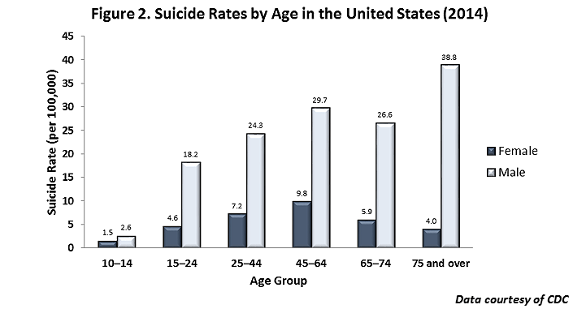

American Foundation of Suicide Prevention states that in comparison to women, men have committed suicide 3.5 times more. What makes this more startling is a 2016 article by Sabrina Tavernise of The New York Times. She describes the increase as “so widespread that they lifted the nation’s suicide rate to 13 per 100,000 people, the highest since 1986”.
